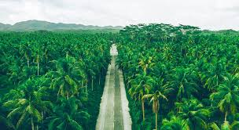
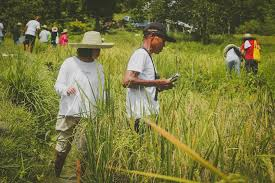
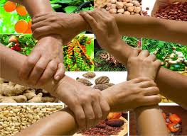

About Us
Bicolandia Organic Coco Farmers Cooperative is dedicated to promoting organic coconut farming and empowering farmers through sustainable agriculture practices, innovation, and community engagement.

Empowering the community through education on organic farming and sustainable living.

Empowering the community through education on organic farming and sustainable living.

Empowering the community through education on organic farming and sustainable living.